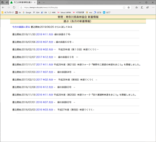

神田珈琲園 お知らせ - 管理画面の使い方 |
|
2019.6 |
３．修正（他の月） |
| 1.起動 - 2.書き込み
- 3a.修正・編集(当月) - 3b.修正・編集（他の月）- 4.削除 - 番外.写真アップロード |
|  |
(1)各月の新着情報を選ぶするページに入り、編集する記事のある月を探す
起動時の画面は、書込欄の下に、当月中に掲載が開始される「最新ニュース」の一覧があります。
その他の月（前月以前・来月以降）の記事を編集するには、[各月の新着情報]をクリックしてください。
|
 |
 |
(1)修正ページに入る
起動時の画面は、書込欄の下に、当月中に掲載が開始される「トピックス」の記事の一覧があります。
それぞれ、右下隅に[修正]と[削除]のボタンがあります。
修正したい記事を選び、 をクリックしてください。 をクリックしてください。
|
|
 |
(2)記事が表示される
修正用の画面が現れます。
修正の必要な部分について、入力・修正してください。
おおむね２．書き込みと同様ですが、既に写真が登録されているニュースの場合のみ、[写真あり]の表示と、写真を削除するための[削除]のチェック欄が現れます。写真を差し替える場合には、写真（ファイル）の「参照」ボタンをクリックし、パソコンの中に保存してある画像ファイルを選択してください。
PDFファイルがある場合にのみ、[PDF文書]の表示と、PDFを撮っていた。削除するための[削除]のチェック欄が現れます。PDFを差し替える場合には、PDF（ファイル）の「参照」ボタンをクリックし、パソコンの中に保存してあるPDFファイルを選択してください。
入力後 ボタンをクリックしてください。 ボタンをクリックしてください。 |
|
 |
(4)完了
[最初のページに戻る]をクリックすると、起動時の画面に戻ります。
|
|
(4)各項目について
-
タイトル
記事のタイトルです。
字数に制限はありませんが、短い方が（画面レイアウトが）見やすくなります。
ＨＴＭＬタグは使用出来ません。
-
本文
記事スの本文です。 字数に制限はありません。
ＨＴＭＬタグは使用出来ません。
-
公開期間 始
ここに入力した日付まで、このニュースを公開ページに表示しません。
つまり、公開の「初日」です。
最初は、当日の日付が入っています。
この場合、書き込んだらすぐに、公開ページにも表示されるようになります。
【Tips】
日付の数字は、2019/6/23 のように、「/」（半角スラッシュ）で区切ってください。
- 公開期間 終
ここに入力した日付を過ぎると、この記事を公開ページに表示しません。
つまり、公開の「最終日」です。
半角マイナス（-)を入力すると、最終日は設定なしになります。
最初は、設定なしになっています。
-
写真
省略しても差し支えありません。
新しい写真への差し替え・写真の追加を行うには、番外．写真アップロードの手順によって、アップロードしたいファイルを入力してください。
方法必要な場合には、入力してください。
記事に（既に）写真が入っている場合には、この欄に[写真あり]の表示と、[削除]のチェック欄が現れます。
[写真あり]をクリックすると、写真を拡大表示します。
写真を削除したい場合には[削除]欄にチェックを入れてください。（ファイル名を入れる欄は空白のままにしてください。）
写真は、JpegまたはGIF形式の画像に限ります。あらかじめパソコンに保存しておいてください。
なるだけ小さな画像を使ってください。（大きな画像ですと、公開ページの表示が遅くなります。）
400ピクセル×300ピクセル、50KByte程度のJpeg画像で、充分綺麗に表示されます。
（カメラ付き携帯電話の画像でも実用になります。）
→ 番外．写真アップロード
|
|
|